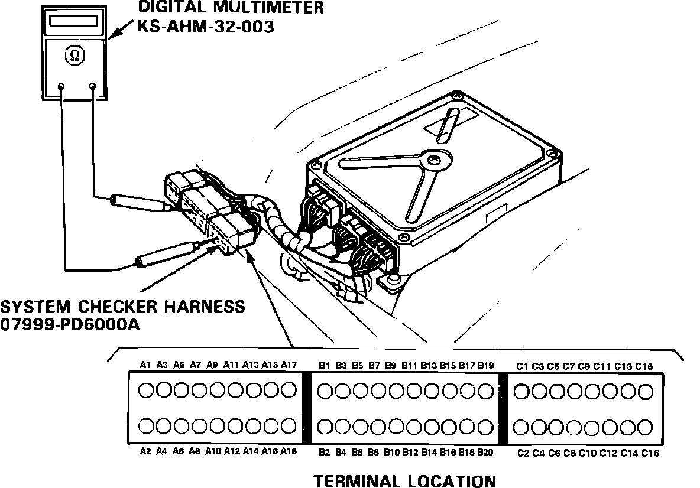

Idle Speed: Testing and Inspection
Fig. 1 Checker Harness & Multimeter Installation:

Some of the following tests may require the use of system checker harness 07999-PD6000A and multimeter KS-AHM-32-003. When such usage is necessary, the front passenger seat must be removed and the harness and multimeter must be connected as shown, Fig. 1.